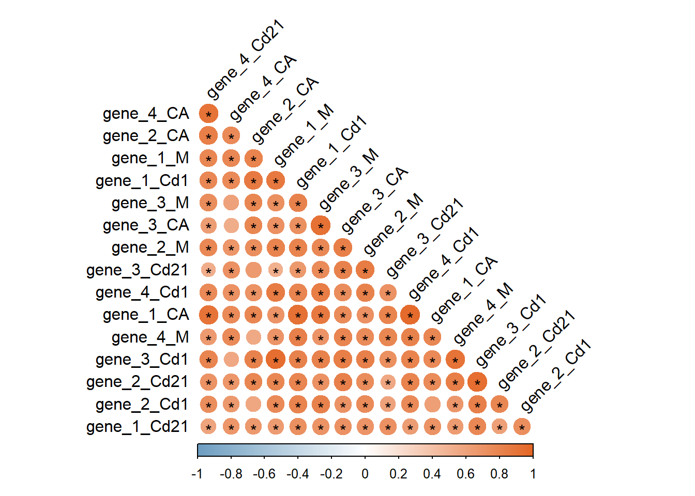
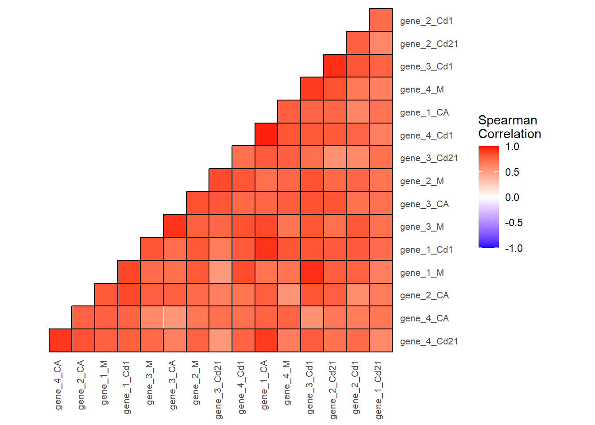

Com ja he comentat a l’apartat de correlacions, el primer que farem és importar les dades i fer la matriu de correlacions i de significància de la correlació.
cor_matrix <-cor(cor_data, method ="spearman", use="pairwise.complete.obs" )library(Hmisc)correlation <-rcorr(cor_data ,type ="spearman")#per treballar dins de Rcor_matrix <- correlation$rp_matrix <- correlation$P
En el cas que la matriu la volguèssiu fer a l’SPSS o una altre plataforma i simplement fer els gràfics, podeu importar-la directament i saltar-vos els passos anteriors.
Paquet corrplot
Una manera fàcil de fer-ho i ordenar-ho és amb el paquet corrplot , com ja he comentat. Podeu jugar anb els settings, pregunteu-li a alguna IA quines possibilitats hi ha.
library(corrplot)
Warning: el paquet 'corrplot' es va construir amb la versió d'R 4.5.2
corrplot 0.95 loaded
corrplot(cor_matrix,method ="circle", # altres: "circle", "square", "ellipse", "shade", "number"type ="lower", # només triangle superiororder ="hclust", # agrupa per clusterstl.col ="black", # colors dels labelstl.srt =45, # angle labelscol =colorRampPalette(c("#6D9EC1", "white", "#E46726"))(200),mar =c(0,0,1,0),addgrid.col =NA,# ← treu les línies de fonsdiag =FALSE,p.mat = p_matrix, sig.level =0.05,insig ="label_sig", # mostra '*'pch.cex =1)

Amb ggplot
Per a controlar-ho tot més, podem fer-ho amb ggplot. En aquest cas també he creat una funció per a ordenar-les, però si voleu triar com es veu ho podeu deixar tal com està i passar directament al ggplot. Per altre banda comentar que en un inici no elimino cap correlació, per tant les correlacions dins de la mateixa generació també aparèixen.
#funció per a reordenar i que les correlacions es vegin millor------reorder_cormat <-function(cor_matrix, p_matrix){# Comprova que les matrius tinguin les mateixes dimensionsif(!all(dim(cor_matrix) ==dim(p_matrix))){stop("Les matrius han de tenir la mateixa mida") }# Calcula distància basada en correlació dd <-as.dist((1- cor_matrix) /2) hc <-hclust(dd) # clustering jeràrquic# Reordena matriu de correlacions mat_corr_ordered <- cor_matrix[hc$order, hc$order]# Reordena matriu de significació igual mat_sig_ordered <- p_matrix[hc$order, hc$order]# Només la meitat superior mat_corr_ordered[lower.tri(mat_corr_ordered)] <-NA mat_sig_ordered[lower.tri(mat_sig_ordered)] <-NA# Retorna llista amb ambdues matrius reordenadesreturn(list(cor = mat_corr_ordered, sig = mat_sig_ordered))}#aplicar la funció ordered_matrices <-reorder_cormat(cor_matrix, p_matrix)mat_corr_ord <- ordered_matrices$cor #Aquesta es la matriu de correlacions ordenadamat_sig_ord <- ordered_matrices$sig #Aquesta es la matriu de significació ordenada segons la de correlació
Un cop ordenades les preparem per al ggplot.
#Ho preparem per al ggplot: a format long i unim-----library(reshape2)df_values <-melt(mat_corr_ord, na.rm = T) # mantenim NAs #funció melt és per passar a format long però en codi antic colnames(df_values) <-c("Var1", "Var2", "Corr")df_sig <-melt(mat_sig_ord, na.rm = T)colnames(df_sig) <-c("Var1", "Var2", "Sig")df_plot <-merge(df_values, df_sig, by =c("Var1", "Var2"), all.x =TRUE)View (df_plot) #Aquest és el que farem servir per al heatmap, tot juntdf_plot <- df_plot %>%na.omit() #eliminar els que tinguin NA (només seran els de ell contra ell)
Fem el heatmap:
ggheatmap <-ggplot(df_plot, aes(Var2, Var1, fill = Corr)) +geom_tile(color ="white") +# cel·les normalsgeom_tile(data =subset(df_plot, Sig <0.05), aes(Var2, Var1), color ="black", # contorn negre de les cel·les significativeslinewidth =0.5) +# gruix del contornscale_fill_gradient2(low ="blue", high ="red", mid ="white",midpoint =0, limit =c(-1,1), space ="Lab",name ="Spearman\nCorrelation") +scale_y_discrete(position ="right") +coord_fixed() +theme_minimal() +theme(axis.text.x =element_text(angle =90, vjust =0, hjust =1, size =8),axis.text.y =element_text(size =8, hjust =0),panel.grid =element_blank(),axis.title =element_blank(),panel.background =element_blank() )print(ggheatmap) #veure'l

Modificacions matriu
Si volem anar més enllà podriem filtrar la matriu i que ens ensenyi només mares vs les seves cries. Hem d’agafar les dades sense ordenar-les abans, sinó perdem informació.
library(reshape2)df_values <-melt(cor_matrix, na.rm = T) # mantenim NAs #funció melt és per passar a format long però en codi antic colnames(df_values) <-c("Var1", "Var2", "Corr")df_values <- df_values %>%filter(grepl("M", Var1) &!grepl("M", Var2))df_sig <-melt(p_matrix, na.rm = T)colnames(df_sig) <-c("Var1", "Var2", "Sig")df_sig <- df_sig %>%filter(grepl("M", Var1) &!grepl("M", Var2))df_plot <-merge(df_values, df_sig, by =c("Var1", "Var2"), all.x =TRUE)
I fem el heatmap:
ggheatmap <-ggplot(df_plot, aes(Var2, Var1, fill = Corr)) +geom_tile(color ="white") +# cel·les normalsgeom_tile(data =subset(df_plot, Sig <0.05), aes(Var2, Var1), color ="black", # contorn negre de les cel·les significativeslinewidth =0.5) +# gruix del contornscale_fill_gradient2(low ="blue", high ="red", mid ="white",midpoint =0, limit =c(-1,1), space ="Lab",name ="Spearman\nCorrelation") +scale_y_discrete(position ="right") +coord_fixed() +theme_minimal() +theme(axis.text.x =element_text(angle =90, vjust =0, hjust =1, size =8),axis.text.y =element_text(size =8, hjust =0),panel.grid =element_blank(),axis.title =element_blank(),panel.background =element_blank() )print(ggheatmap) #veure'l